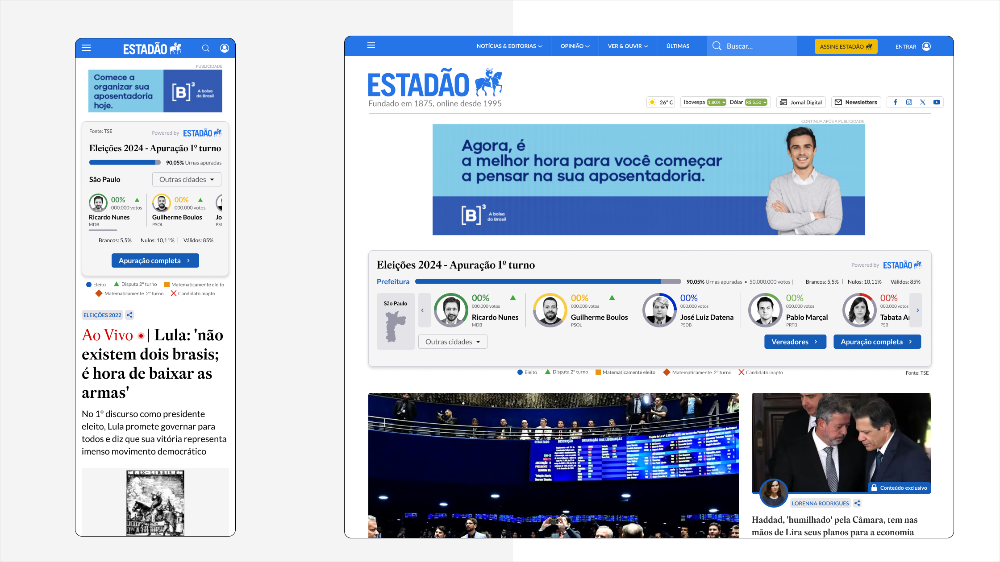

Estadão · Product Design
Um sistema editorial para conhecer candidatos e acompanhar resultados.
Estadão · Eleições municipais de 2024 · Product Design
Pesquisa exploratória · UX/UI · Desktop, tablet e mobile

01
Nas eleições municipais de 2024, fui responsável pelo projeto completo da experiência digital de eleições do Estadão — da investigação inicial ao design final das interfaces.
O desafio era transformar um grande volume de cidades, candidatos, cargos e resultados em uma experiência clara e acessível. Mais do que criar uma página de apuração, era necessário construir um sistema capaz de acompanhar diferentes necessidades do leitor antes, durante e depois da votação.
Conduzi o benchmarking e a pesquisa exploratória, reuni e organizei as informações do produto, analisei referências nacionais e internacionais e propus novos formatos para a cobertura. A partir desses aprendizados, estruturei a arquitetura da informação, os fluxos, os estados da experiência e toda a camada visual.
A solução reuniu perfis de candidatos, busca por cidade, índices, mapas, listas de vereadores, resultados por partido, componentes de apuração e formatos adaptados para home, matérias e parceiros — em versões desktop e mobile.
02
Uma cobertura eleitoral não é uma experiência estática. As informações mudam ao longo do processo e precisam responder a diferentes intenções: conhecer candidatos, encontrar uma cidade, acompanhar a contagem dos votos ou analisar o resultado final.
O projeto precisava organizar essa complexidade sem sobrecarregar o leitor e, ao mesmo tempo, manter precisão, neutralidade e confiança.
Escala
Milhares de cidades, candidatos e cargos disputados ao mesmo tempo.
Tempo
A informação muda antes, durante e depois da votação.
Estado
Nem todo dado está disponível: a experiência precisa funcionar incompleta.
Distribuição
O mesmo conteúdo precisa aparecer na home, em matérias e em parceiros.
03
Fui responsável pelo projeto completo, desde a investigação das referências e organização das informações até a definição da experiência e o desenho final das interfaces.
04
Analisei experiências nacionais e internacionais para entender como diferentes produtos apresentavam candidatos, localidades, mapas e resultados.
A investigação também incluiu formatos de comparação, debates, checagem de declarações, jogos e simulações. O objetivo não era apenas identificar padrões de interface, mas ampliar as possibilidades para a cobertura eleitoral do Estadão.
Frente 01
Apuração e resultados
Frente 02
Perfis e comparação de candidatos
Frente 03
Mapas e leitura territorial
Frente 04
Engajamento e formatos experimentais
05
A cidade orienta a experiência
O conteúdo relevante depende da localidade do leitor.
A informação precisa ser progressiva
Localidade, cargo, turno e estágio da apuração precisam ser compreendidos antes dos detalhes.
O produto começa antes da votação
Perfis e conteúdos editoriais ajudam o leitor a conhecer as candidaturas.
Listas e mapas são complementares
Listas facilitam consulta e comparação; mapas revelam padrões territoriais.
Estados incompletos precisam ser projetados
A experiência deve funcionar antes dos dados, durante a apuração e após o resultado.
O conteúdo precisa circular
As informações devem ser adaptadas para home, matérias, parceiros e diferentes telas.
06
Antes da votação
Durante a apuração
Depois do resultado
07
Em vez de uma única página extensa, organizei a cobertura como um sistema de pontos de entrada conectados. O leitor poderia iniciar pela busca, por uma matéria, pela home ou pelo perfil de um candidato e continuar explorando o mesmo ecossistema.
Pontos de entrada conectados
08
A seleção da cidade funciona como contexto para toda a experiência, reduzindo o volume inicial de informação e aproximando o conteúdo da realidade do leitor.
09
Os perfis foram pensados para reunir informações eleitorais e conteúdo jornalístico numa mesma experiência. A estrutura precisava acomodar cargos e quantidades de informação diferentes sem perder consistência.
10
Durante a contagem, a ordem em que a informação aparece é o que sustenta a confiança: o leitor precisa saber onde está e quanto já foi apurado antes de interpretar qualquer número.
Estados projetados
11
Enquanto as listas facilitavam a consulta objetiva, os mapas permitiam compreender a dimensão territorial do resultado. As duas formas de visualização foram tratadas como complementares.
12
Os dados eleitorais precisavam acompanhar o leitor dentro do ecossistema editorial. Por isso, a solução foi adaptada para diferentes superfícies, mantendo a mesma lógica de leitura em formatos mais compactos.
13
Para sustentar diferentes páginas, cargos, estados e tamanhos de tela, organizei a interface a partir de padrões reutilizáveis. Isso permitia manter consistência sem limitar as necessidades específicas de cada contexto editorial.
14
Em telas menores, a decisão não é o que cabe, e sim o que precisa ser lido primeiro — especialmente quando a lista é longa, a foto não existe ou o dado ainda não chegou.
15
O que ficou
Projetar uma cobertura eleitoral exige equilibrar precisão, velocidade e clareza. Os dados mudam em tempo real, mas a interface precisa continuar previsível e confiável.
O projeto reforçou a importância de pensar em sistemas, não em páginas isoladas. Busca, perfis, apuração, mapas e componentes editoriais precisavam funcionar individualmente e, ao mesmo tempo, formar uma experiência coerente.
Também mostrou que, em produtos orientados por dados, estados incompletos e situações excepcionais não são casos secundários: fazem parte da experiência principal.